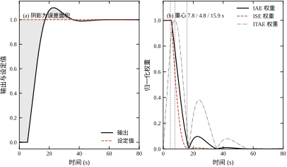
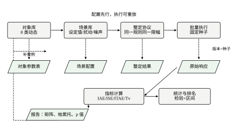
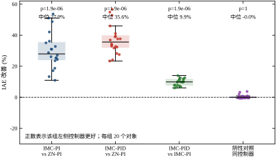
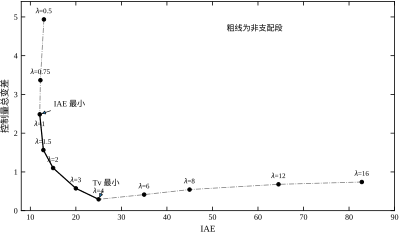
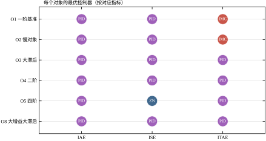
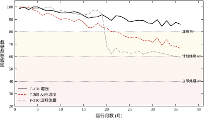

第 113 章讲的是把一套控制系统从图纸做到投用。投用之后还有一件常被跳过的事：证明它确实做对了。这件事听起来像走流程，实际决定了一个项目能不能积累经验——同一个控制器，如果不能用同一把尺子在不同装置上重复测量，那么“这次调得不错”就只是一句印象，下次还得从零开始。
本章只回答一个问题：怎么用可复现的方式，判断一个控制器比另一个好，或者比它自己三个月前好。
设想你连续参加过三次控制系统验收会。
第一次，项目经理说：“新方案投用以后，响应比原来快多了，操作员反映很好。”会议室里没有人反对，会议记录上写“验收通过”。半年后有人问：到底快了多少？没有人能回答，因为当时没有留下基线数据。
第二次，报告上有一页表格：IAE 从 18.4 降到 13.2，降幅 28%。数字很干净。但仔细问下去会发现：基线是手动操作时的一段历史数据，时间窗只有 40 分钟，中间还停过一次车；新方案的数字来自另一次阶跃测试，负荷不一样高。两个数字都算对了，但它们不在同一把尺子上。
第三次，业主请了三家做对比测试。三家各跑各的仿真，各自的报告都说自己最好：甲说 IAE 最小，乙说超调最低，丙说阀门动作最少。业主把三份报告摊在桌上，发现三家用的对象、扰动、时间窗、限幅都不一样，根本没法比。
这三种失败不是态度问题，是方法问题。第一种缺口径，第二种缺基准，第三种缺可比性。本章要建立的东西，就是把这三样补齐。
一句话概括：评估等于用同一把尺子（口径）、在同一批对象上（基准）、判断差异是否偶然（显著性）。
口径回答“这个数是怎么算出来的”。它包含积分区间、权函数、采样步长、限幅、归一化方式。口径不定，数字之间就没有可比性。工程上常见的做法是把口径写成一张表，随报告一起发；表在，数字才有意义。
基准回答“跟谁比”。基准可以是同一个控制器的历史版本、可以是行业常用的整定规则、也可以是“手动操作的平均水平”。没有基准的绝对数字几乎无法解读：IAE 等于 12 是大还是小，取决于对象的时间常数和扰动的幅值。
显著性回答“这个差是不是偶然”。两个控制器在 20 个对象上互有胜负、中位差 2%，这和“20 个对象全胜、中位差 28%”是两件完全不同的事。前者说明它们差不多，后者说明存在系统差异。第 114.4 节会把这件事变成可算的判据。
本节的三个词会在后面反复出现。读者可以把它们当成一条检查链：先问口径，再问基准，最后问显著性。三问答不全，“我的方案更好”就只是一句主张。
工程评估里有一条几乎必然成立的规律：任何一个被当作考核目标的指标，都会在半年内被优化到失真。
举一个控制系统里的具体例子。假设验收标准写成“IAE 小于 15”。要让 IAE 变小，最省力的办法不是把控制器调好，而是：
这四条都不算作弊，它们只是“口径没锁死”的必然结果。所以基准测试平台的第一职责不是算指标，而是把口径固定下来，让想改数字的人只能通过改控制器来改数字。
这一条也解释了为什么工业界的回路性能监控软件都把公式、采样、时间窗写死在软件里，而不提供“自定义指标”。可配置性在这里不是优点，而是漏洞。
本章所有数字都由 code/ch114_sim.py 生成，规模如下：
这些数字的用途是演示判据和量级，不是给某个装置下结论。读者应该关注“28.7% 的领先在统一裕度后缩到 8.7%”这样的关系，而不是记住 12.067 这个数。
本章的边界有三条。
第一条，不重复控制器本身的推导。PID 三种作用怎么来、参数怎么整，见第 44 章与第 106 章；预测控制的滚动优化与稳定性，见第 58 章与第 80 章；Smith 预估器的补偿机理，见第 47 章与第 107 章。本章把这四种控制器当成四个待测对象，只关心怎么公平地量它们。
第二条，不重复工程落地流程。P&ID 怎么读、变量怎么配、方案怎么选、投用怎么验收，第 113 章已经讲完。本章处理的是落地之后的两个环节：投用前的性能确认与投用后的长期监控。两者的接口是第 113.10 节的验收清单，本章把它细化成可算的指标。
第三条，不追求“哪个控制器最好”的结论。基准测试的价值恰恰在于：结论依赖对象族、依赖评价口径、依赖失败怎么记分。本章会用一组真实数字说明，同一批数据在三种记分方式下能得出三个不同的冠军。凡是给出“某某控制器全面更优”的报告，读者都应该先翻它的口径表。
七节按“尺子—赛场—裁判—赛后”的顺序展开。
第 114.2 节造尺子：把 IAE、ISE、ITAE 写成统一形式，说明三者的差别只在权函数，并给出五个口径陷阱。第 114.3 节造赛场：对象库、场景库、整定协议、可复现三件套。第 114.4 节请裁判：配对比较、符号检验、符号秩检验、多重比较校正、效应量。第 114.5 节做横向对比：基准矩阵、帕累托前沿、统一裕度、消融、失败分析。第 114.6 节做赛后体检：验收指标、四类工况、长期监控与三级告警。第 114.7 节收束全章。
一条主线贯穿始终：先定尺子，再定赛场，再定裁判，最后定赛后体检。 顺序不能颠倒。先有数字再找口径，等于先射箭再画靶；先有结论再补显著性，等于给已经做好的决定找理由。
同一份性能评估报告，会被三类人读，他们关心的东西完全不同。写报告时把这三类需求都照顾到，报告才不会只在归档柜里活着。
操作与维护人员只关心两件事：这个回路现在还稳不稳，出了偏差该动哪里。给他们看的是趋势图、告警级别、处置建议，不是 IAE 的绝对值。所以报告要有一页“看板页”，用红黄绿三色标出每个回路的状态，配上最近一次的阶跃测试结果与阀门行程统计。
工艺与工艺安全人员关心的是余量：最坏情况下偏差会不会顶到联锁值，扰动之后多久能回到允许带。给他们看的是最大偏差、恢复时间、摄动后的裕度，以及“如果对象参数按最坏方向漂 50%，还剩下多少余量”。这一类的数字必须带工况，脱离工况的余量没有意义。
技术管理与评审人员关心的是可比性与可复核性：这套方案比原来好多少，这个结论有多可靠，明年换一套还能不能比。给他们看的是口径表、基准矩阵、成对差分布、显著性检验与置信区间，以及复现步骤。
三类读者的需求有一个共同点：都要“变了多少”而不是“是多少”。 操作员要的是“比上个月差了多少”，工艺要的是“离联锁还有多少”，管理层要的是“比原方案好了多少”。这也是本章反复用相对差、比值、绩效指数而少用绝对值的原因。
反过来，如果一份报告只写“IAE 等于 12.07、超调 9.72%、调节时间 33 秒”，三类读者都读不出东西：操作员不知道要不要动，工艺不知道余量够不够，管理层不知道值不值得推广。数字本身不构成信息，比较才构成信息。
一条阶跃响应曲线上有很多信息：上升多快、超调多少、振荡几次、多久稳定、控制量冲多高。人眼能同时看四五条曲线并做出判断，但看不了一百条。
把曲线压成一个数，是为了批量比较。压的过程必然丢信息，问题不在于丢，而在于丢的是不是你想留的。选指标的本质，就是选“哪种错误更不可接受”。
三种经典指标可以写成同一个式子：
J_p=\int_0^{T} w(t)\,\bigl|e(t)\bigr|^p\,dt \tag{114-1}
其中 e(t)=r(t)-y(t) 是偏差，T 是积分上限，w(t) 是权函数，p 是指数。三者的取值决定了指标的性格：
写成一个式子的好处是，比较三者时只需要看两个旋钮：指数 p 决定“大偏差和小偏差谁更受重视”，权函数 w 决定“早期偏差和晚期偏差谁更受重视”。这就把“选指标”从口味问题变成了两个明确的问题。
需要强调的是式 (114-1) 的量纲。J_1 的量纲是“偏差乘以时间”，J_2 是“偏差平方乘以时间”。所以 IAE 与 ISE 的数值不能直接比大小，只能在同一指标、同一口径下横向比。本章算例里 IAE 是 12.07、ISE 是 9.16，ISE 反而更小，原因很简单：这段响应的偏差多数时间小于 1，平方之后数值变小了。谁要是拿这两个数说“ISE 更好”，那是把量纲当成了性能。
IAE 就是误差曲线与时间轴围成的面积。它有三个好处：对偏差幅值线性、对时间中性、单位直观（偏差乘秒）。
线性这一点在工程上很重要。ISE 会把一个 2 倍的偏差记成 4 倍的代价，IAE 只记成 2 倍。如果关心的是“总共放走了多少不合格品”，那么放走两倍的不合格量就应该是两倍的代价，IAE 更符合这个直觉。
IAE 的缺点也来自线性：它对“一次大偏差”和“多次小偏差”一视同仁。一个响应如果前期冲得很高但很快回落，与一个慢慢磨、磨很久的响应，可能得到相同的 IAE，而两者的工艺后果完全不同。这时需要另加约束，比如超调上限或调节时间上限。
把指数从 1 改成 2，大偏差的权重被放大，小偏差的权重被压缩。效果是：控制器会优先把“冲上去”的那一段压下来，宁可整体慢一点，也不愿意出现大的峰值。
这在两类场合特别合适。一类是有硬约束的过程，比如反应器温度接近联锁值，一次大超调可能直接触发停车；另一类是偏差本身会被下游放大的过程，比如串级回路的副回路，副回路的一次大偏差会传成主回路的一次大扰动。
代价是尾部。平方压缩了小偏差，于是“最后那一点慢慢爬回去”的误差几乎不计入指标。控制器可能留下一个长时间的小偏差而指标依然很好看。所以用 ISE 时必须同时看稳态误差，否则会漏掉积分作用不足的问题。
权函数取 w(t)=t，误差的代价随时间线性增长。早到的误差便宜，晚到的误差贵。这直接对应“调节时间”这个工程概念：我们希望误差尽快消失，而不是消失得很均匀。
用本章的 O1 算例可以把这个差别量化。对同一个响应（O1 对象，IMC-PI，Kc=2.00，Ti=20 s），三种指标的贡献重心分别是：
| 指标 | 数值 | 贡献重心 (s) | 峰值时刻 (s) |
|---|---|---|---|
| IAE | 12.07 | 7.76 | 0.0 |
| ISE | 9.16 | 4.78 | 0.0 |
| ITAE | 93.62 | 15.87 | 7.5 |
表 114-1 同一响应的三种指标与贡献重心（O1，IMC-PI）
贡献重心是把权函数归一化之后求的时间一阶矩，可以理解为“这个指标主要在为哪一段时间打分”。IAE 的重心在 7.76 s，ISE 提前到 4.78 s（因为平方放大了开头那段大偏差），ITAE 推到 15.87 s（因为时间权重压过了幅值）。图 114-1 把这件事画了出来。

左图是响应本身，阴影是误差面积；右图是三条权函数曲线，各自归一化到峰值 1，竖虚线标出重心。看右图要注意：三条曲线的形状差别远大于它们的名字差别。IAE 是一条跟着误差走的钟形，ISE 更尖更靠前，ITAE 明显右偏且拖尾长。
这张图解释了一个常见困惑：为什么同一批数据换一个指标，排名就变了。因为三个指标根本不是在给同一段时间打分。一个控制器如果赢在开头、输在尾部，它在 ISE 上会赢，在 ITAE 上会输。
| 指标 | 重视什么 | 适用场合 | 主要盲区 |
|---|---|---|---|
| IAE | 累计偏差总量 | 质量型指标、产量损失核算 | 不区分大小偏差，不看尾部 |
| ISE | 峰值偏差 | 有硬约束、下游敏感、安全余量小 | 忽略小偏差与稳态误差 |
| ITAE | 收敛速度 | 快速恢复、批量切换、限时工况 | 对早期大偏差不敏感 |
表 114-2 三类指标的分工
三者的关系不是“谁更先进”，而是“你更怕哪种错误”。怕总量超标就用 IAE，怕峰值越限就用 ISE，怕拖尾不收敛就用 ITAE。工程上更常见的做法是主指标加约束：以 IAE 为主，同时规定超调不超过 10%、调节时间不超过 3 倍时间常数。这样既有一个可优化的标量，又不会为了压标量而牺牲别的性能。
积分型指标适合做研究对比，现场验收用的却是另外几个更直观的量。它们各有明确的定义，也各有明确的读法。
超调量：\sigma=\bigl(\max y-r\bigr)/r\times 100\%。算例里的 IMC-PI 在 O1 上超调 9.72%，刚好在常见的 10% 红线附近。超调只反映峰值，不反映次数，所以要和振荡次数一起看。
调节时间：输出进入并保持在 \pm2\% 误差带内所需的时间。算例里是 33.0 s，约等于 1.65(\tau+\theta)。这个比值可以作为快速估算法：一阶加滞后对象在 IMC 整定下，调节时间大约是 1.5 到 2 倍 (\tau+\theta)。
稳态误差：终值与设定值之差。算例里 y 收敛到 1.000，说明积分作用够。凡是稳态误差不为零的响应，先查积分，不要先查比例。
控制量总变差：衡量执行机构被折腾的程度，
T_v=\sum_{k=1}^{N}\bigl|u_k-u_{k-1}\bigr| \tag{114-2}
它和 IAE 是一对：IAE 管输出，T_v 管代价。算例里 IMC-PI 的 T_v=2.486，意味着整个响应过程中阀门总共走了约 2.5 个工程量程。T_v 太大，阀门磨损快、噪声敏感；T_v 太小，往往意味着控制器太软。
最大灵敏度 M_s：闭环对模型误差的放大倍数，定义与用法见第 106 章。它本来是最合适的公平比较锚点：“两个控制器都调到 M_s=2 再比性能”，比“各用各的整定规则”更接近公平。本章实际用的是幅值裕度 GM，原因在 §114.5.4 会看到：M_s 随比例增益非单调，闭环已经失稳时仍可能算出一个小 M_s，用它当约束会把比较引到失稳点上去。
这五个量合起来，才构成一张完整的验收表。只报 IAE 的报告，读者无法判断阀门会不会磨坏；只报超调的报告，读者无法判断稳态有没有偏差。
同一份数据，换一种口径就能得出不同结论。下面五条都来自本章算例，读者可以照着复现。
| 陷阱 | 做法 | 后果（实测） |
|---|---|---|
| 时间窗 | 积分上限 300 s 改成 1200 s | 有噪声时 IAE 16.1→31.1，ITAE 777→11853 |
| 采样步长 | 0.5 s 放宽到 2.0 s | IAE 12.07→15.18（+26%），ITAE 93.6→163.7（+75%） |
| 阶跃幅值 | 1.0 改成 0.2 | IAE 线性降到 2.41（−80%），超调 9.72%→0% |
| 限幅 | 控制量上限放宽一倍 | 大偏差段可用幅度变大，IAE 降、T_v 升 |
| 归一化 | 用最大偏差归一 vs 用设定值归一 | 前者掩盖绝对偏差，后者掩盖相对偏差 |
表 114-3 五个口径陷阱
第一条最容易被忽略。加测量噪声后，误差永远不为零，积分上限每延长一倍，多出来的部分就整段计入。ITAE 因为有 t 加权，尾部被放大得更厉害：从 300 s 拉到 1200 s，ITAE 涨了 15 倍，而 IAE 只涨了不到一倍。只要报告里出现“ITAE 降低了 60%”而没写积分上限，这个数就不可信。
第三条最容易被误读。阶跃幅值从 1.0 降到 0.2，IAE 精确地降到五分之一，因为 IAE 对幅值线性。但超调从 9.72% 变成 0%，这说明系统进入了不同的工作区：小阶跃下阀门不需要冲到饱和，非线性的影响没被激励出来。用小阶跃测出来的“无超调”，不能外推到大阶跃。
第四条是“指标好看、设备受罪”的典型。限幅放宽，控制器可以在大偏差段输出一个很大的值，误差消得飞快，IAE 自然小。但阀门从 0 冲到 100% 再回来，T_v 会显著增大，长期看是拿设备寿命换指标。
面对一个具体的评估任务，按顺序问三个问题就够了。
第一问：这次评估最怕什么后果？ 怕总量损失，选 IAE；怕越限停车，选 ISE；怕恢复太慢，选 ITAE。答不上来，说明还没想清楚评估目的，这时候选什么指标都是随意的。
第二问：有没有硬约束？ 有超调上限、调节时间上限、阀位行程上限，就写成约束而不是加权项。加权项可以被“用别处的收益”换掉，约束不能。
第三问：口径表能不能提前写死？ 能写死才做对比，写不死就先补口径。口径表至少要包含积分区间、采样步长、阶跃幅值、限幅、归一化方式五项，缺一项就留一个后门。
这三问的答案要写进评估方案，并在报告首页重复一遍。这不是形式主义：半年后回头看报告的人，只能靠这一页判断数字能不能信。
积分型指标最容易出问题的地方，是它只能由软件算，评审者无法复核。有一个办法能让它变得可核对：找一个闭式解，把指标换算成有物理意义的秒数。
设闭环响应可以近似成一阶惯性，
y(t)=1-e^{-t/\lambda},\qquad e(t)=e^{-t/\lambda}\tag{114-5}
其中 \lambda 是闭环时间常数。三个指标都能积出来：
\mathrm{IAE}=\int_0^\infty e^{-t/\lambda}\,dt=\lambda,\qquad \mathrm{ISE}=\int_0^\infty e^{-2t/\lambda}\,dt=\frac{\lambda}{2},\qquad \mathrm{ITAE}=\int_0^\infty t\,e^{-t/\lambda}\,dt=\lambda^2\tag{114-6}
这三个结果值得记住，因为它们给了指标一个直观读法：IAE 的单位是秒，数值等于闭环等效滞后时间。 如果对象还有纯滞后 \theta，那么在 t<\theta 期间误差恒为 1，IAE 变成 \lambda+\theta，仍然是秒。
用这把尺子去量本章的 O1 算例。IMC-PI 的 IAE 是 12.07，读成“等效滞后 12.1 s”；对象的 (\tau+\theta) 是 25 s。也就是说，闭环把 25 s 的惯性压缩到了 12 s 左右，压缩比约 2:1。这个说法比“IAE 等于 12.07”有信息量得多，因为它立刻告诉评审：还有一半的原始惯性留在响应里，进一步提速的余地存在，但要拿超调去换——实测超调 9.72%，已经在 10% 红线边上。
同一把尺子也能说明为什么 IAE 不能跨对象直接比。O5 是四个 10 s 惯性串联，IMC-PID 的 IAE 是 42.6，看起来比 O1 差三倍多；但 O5 的原始 (\tau+\theta) 是 42 s，压到 42.6 s 已经接近极限。绝对值只在同一对象上有意义，跨对象只能比“压缩比”。 这是第 114.5 节用几何均值而不是算术均值的一个前置理由。
手算还有第三个用处：抓错。如果你按式 (114-6) 估出的 IAE 与软件算出的差一个数量级，多半是单位错了（时间用分钟而积分用秒），或者阶跃幅值没有归一。这类错误在报告里很常见，而它们不会让程序报错。
式 (114-6) 里还藏着一个关系：\mathrm{ITAE}/\mathrm{IAE}=\lambda。这不是一阶近似的巧合，而是普遍成立的恒等式：
\frac{\mathrm{ITAE}}{\mathrm{IAE}}=\frac{\int_0^T t\,|e|\,dt}{\int_0^T |e|\,dt}=\bar t_e\tag{114-7}
右边正是第 114.2.5 节定义的贡献重心。也就是说，ITAE 除以 IAE 就是重心时间，不需要另外算一阶矩。
拿 O1 验证：93.62/12.07=7.76，与表中重心 7.76 s 完全一致。ISE 也有类似的关系：\mathrm{ISE}/\mathrm{IAE} 是“按误差幅值加权的平均误差”，量纲就是误差本身；O1 是 9.16/12.07=0.76，说明大偏差段的平均幅值约 0.76，其余时间都在小偏差区慢慢爬。
这个恒等式在工程上最实用的地方是当校验和用。三个数只要同时报出，就必须满足 ITAE = IAE \times 重心；不满足，说明三个数的积分区间、权函数或者采样率没有对齐。这比逐项核对口径表快得多，也更难糊弄——想改一个数，就得同时改另外两个。
还有一个推论值得写进报告：当 \bar t_e 明显小于 IAE 时，误差是“前重后轻”的，说明响应快但拖尾长；当 \bar t_e 接近甚至超过 IAE 时，误差在时间上分布得比较均匀，通常对应慢而稳的整定。O1 的 \bar t_e=7.76 小于 IAE =12.07，正是一个“起得快、尾部长”的典型形状，与它 9.72% 的超调、33 s 的调节时间吻合。
工程上有一个很省事的习惯：不测时域指标，直接报带宽。“闭环带宽 0.2 rad/s，比原来的 0.1 快一倍，所以性能翻倍。”这句话在多数时候方向是对的，但它不是恒等式，而且会在关键场合骗人。
先看同向的一面。O1 上四条规则的频域与时域指标确实同向：ZN-PI 的幅值裕度 5.7 dB、相位裕度 39.0 度、IAE 16.88；IMC-PI 是 9.9 dB、61.4 度、12.07；IMC-PID 是 6.8 dB、68.7 度、10.74。裕度大的两个，IAE 也小。这时候用裕度排序和用 IAE 排序，结论一致。
再看反向的一面。O1 的增益降 30% 之后，IMC-PI 的幅值裕度从 9.94 dB 升到 13.04 dB，按“裕度大好”的逻辑应该表扬；但同一组数据的 IAE 从 12.07 涨到 14.29，跟踪性能实际变差了。原因很简单：增益降了，回路增益小了，稳定余量自然变大，代价是闭环变慢。裕度与性能在参数漂移的方向上可以完全相反。
根子在两者的定义不同。IAE 是 |S(j\omega)| 乘上扰动谱之后的积分面积，它关心的是“整个频段上灵敏度有多大、持续多久”；带宽只给出一个频率尺度，不给出面积；裕度只关心环路在 -180 度附近的几个点。三个量描述的是同一闭环的三个不同侧面，谁也替代不了谁。
所以工程评估里要分工：频域量判稳定与鲁棒，时域量判性能与代价，两者都要报，不能互相换算。 只报带宽的报告，遇到“增益掉了但裕度变大”这类情况就会给出相反的结论；只报 IAE 的报告，遇到“性能尚可但裕度只剩 2 dB”的回路会漏掉风险。本章的基准矩阵用 IAE，公平比较用幅值裕度，验收表里两者并列，就是这个分工的体现。
公式写成积分号很干净，落到代码里就是一次累加。三条纪律不遵守，算出来的数会在第三位小数上骗人。
第一条，先归一，再积分。 误差要除以阶跃幅值，控制量要除以稳态值，对象增益要归一到 1。本章的对象增益本来就接近 1，所以看起来可以省这一步；但 O8 的增益是 2.5，如果不归一，它的 IAE 会天然比别的对象大 2.5 倍，几何均值就被它带偏。归一化方式必须写进口径表，因为“除以幅值”和“不除”是两种口径。
第二条，积分与采样同源，用梯形法。 采样周期 t_s 与积分用的点必须是同一批数据，不能一边用 1 s 归档值、一边用 0.5 s 仿真值。离散化用梯形法而不是矩形法：梯形法的误差随 t_s 二阶收敛，t_s 减半误差降到四分之一；矩形法只有一阶，t_s 减半误差只减半。本章把 t_s 从 0.5 s 放宽到 2.0 s 时，IAE 涨了 26%、ITAE 涨了 75%，其中既有真实的信息损失，也有离散化误差——用梯形法能把后者压到最小。
第三条，截断要检查尾部。 积分上限 T 定完之后，看一眼 e(T) 是否已经落进稳态误差带。本章无噪声时，T 取 300 s 与 800 s 给出完全相同的 IAE（12.067），说明尾部确实收敛了；加噪声之后两者差到近一倍，说明此时起作用的不是“收敛”而是“噪声积分”，T 必须与噪声水平一起报。检查尾部的成本是看一眼最后一个数，收益是避免一个系统性的低估。
三条之外还有一个实现上的小建议：把这些规则写成库函数，不要在每份报告脚本里各写一遍。各写一遍的结果是同一个指标有三种算法，第三种还带一个手误的索引偏移。指标的可比性，一半靠口径表，一半靠同一份代码。
前面反复提到“口径表”，这里给出它的具体样子。八个字段，每个字段一句话说明为什么不能省。
八项填完，口径表大概一页。工程上把它放在报告第一页而不是附录，因为附录没人看，而这一页决定了后面所有数字的读法。
很多人把基准测试理解成“多跑几个例子”。跑例子不难，难的是让不同的人在不同时间跑出同样的结论。
一条判据可以区分“有平台”和“没平台”：把脚本交给另一个人，他能不能在不知道结论的情况下复现你的排名？ 能，就是平台；不能，就只是一次实验。差别不在代码量，而在于对象、场景、协议、指标、报告这五件事有没有被写死。
一个最小可用的基准平台由五段组成，图 114-2 是它的数据流。

对象库决定覆盖哪些动态特性。只有一阶对象，测不出整定规则对高阶对象的适应性；只有最小相位对象，测不出照搬公式的后果。
场景库决定激励什么。设定值阶跃测跟踪，输入扰动测抗扰，测量噪声测微分是否被噪声吃掉，参数摄动测鲁棒性。四类缺一类，结论就会偏向某一种工况。
整定协议决定“信息条件是否相同”。所有控制器只能用同一份对象先验（这里是 FOPDT 近似参数），不能一个用真模型、一个用近似模型。
批量执行决定可复现性。固定随机种子、固定仿真步长、固定仿真时长，输出原始响应与指标两张表。
统计与报告决定结论的强度。单个对象的胜负不构成结论，要给出分布、胜率、中位改善、显著性。
图里还有两条虚线反馈：报告发现问题（例如某类对象上大面积发散）要回到对象库补案例；执行发现配置缺失要回到场景库补场景。平台是长出来的，不是一次设计完的。
| 对象 | 传递函数 | FOPDT 近似 (\tau,\theta) | 考察什么 |
|---|---|---|---|
| O1 | \dfrac{1}{20s+1}e^{-5s} | (20, 5) | 基准，\theta/\tau=0.25 |
| O2 | \dfrac{1}{50s+1}e^{-10s} | (50, 10) | 慢过程，积分作用是否够 |
| O3 | \dfrac{1}{10s+1}e^{-8s} | (10, 8) | 大滞后，\theta/\tau=0.8 |
| O4 | \dfrac{1}{(20s+1)(5s+1)}e^{-3s} | (22.5, 5.5) | 二阶，半规则近似的误差 |
| O5 | \dfrac{1}{(10s+1)^4}e^{-2s} | (15, 27) | 高阶，纯滞后主导 |
| O6 | \dfrac{1-8s}{(20s+1)(5s+1)}e^{-2s} | (22.5, 4.5) | 右半平面零点，非最小相位 |
| O7 | \dfrac{1-10s}{(30s+1)(5s+1)} | (32.5, 2.5) | 反向响应，先反后正 |
| O8 | \dfrac{2.5}{35s+1}e^{-12s} | (35, 12) | 大增益大滞后，限幅影响 |
表 114-4 对象库的八个对象与各自的考察点
八个对象不是随便凑的。O1 是“标准题”，所有规则在这里都应该表现正常；O2 和 O3 分别代表“慢”和“滞后大”两个方向的极端；O4 和 O5 用来检验半规则近似在高阶对象上还剩多少可信度；O6 和 O7 是“陷阱题”，专门抓照搬最小相位公式的错误；O8 用来看限幅与增益失配对整定的影响。
FOPDT 近似统一用半规则：保留最大的时间常数，第二大的折半加到 \tau，其余全部计入 \theta。这个近似把 O5 折成 \tau=15、\theta=27，纯滞后比达到 1.8。这个数看起来夸张，但四阶惯性叠加的真实阶跃响应确实有很长的“看似不动”段，把它当纯滞后处理是对现场直觉的尊重。
O6 和 O7 的右半平面零点在近似里被丢掉了，这是有意的。所有基于 FOPDT 的整定规则都会遇到这个问题，平台要做的不是替它们掩盖，而是让后果暴露出来。
场景比对象更容易被简化。很多对比实验只做设定值阶跃，结论就只对跟踪有效。本章的平台包含五类场景：
五类场景不必都跑满全部对象。常用的做法是“主场景全跑、辅场景抽跑”：设定值阶跃跑 8 个对象，其余四类各跑 2 到 3 个代表对象。这样既控制了计算量，又不会漏掉某一类失效模式。
本章的统计检验用的是主场景，帕累托与公平比较用的也是主场景，长期监控用的是带噪声的场景。这样安排是为了让每一节的数字都能追溯到一张明确的场景表，而不是“某个时候跑的那次”。
对比实验最容易犯的错，是让参赛者处在不同的信息条件下。本章的平台强制三条：
同先验。四条整定规则都只拿到 FOPDT 近似参数，没有人能看到真实的高阶模型。如果允许某条规则用全模型优化参数，那它赢的不是规则，是信息。
同限幅。控制量上下限、变化率限制、抗饱和逻辑完全一致。这一条看似琐碎，实际影响很大：限幅一变，T_v 与 IAE 会同时变化，两个指标还朝相反方向走（见 §114.2.8 第四条）。
同时间窗。所有对象按 12(\tau+\theta) 截断，最短 300 s。这一条决定了 ITAE 的可比性——时间窗不同，ITAE 根本没有比较意义。
反过来，有三件事必须允许不同，否则比较没有意义：控制器的结构（PI 还是 PID）、参数的取值（各自规则算出来的）、计算量（这是真实的工程差异，应当单独报告，不能混进 IAE）。
还有一条隐性规则：调参集与测试集要分开。用 20 个对象调规则、再用同 20 个对象评估，结论一定乐观。规范做法是留出一批对象只用于最终评估，调参时不许看。本章的算例为了演示，调参与评估共用同一批对象，这一点在解读数字时要打折扣。
| 缺陷 | 表现 | 后果 |
|---|---|---|
| 只报均值 | 一张表只有“平均 IAE” | 少数发散样本被平均掉，结论反转 |
| 删掉失败样本 | “这几个对象不典型” | 平台失去发现失效模式的能力 |
| 单一对象族 | 全是一阶加滞后 | 规则在非最小相位上失效却测不出来 |
| 无种子控制 | 每次跑的数字都不一样 | 差异无法归因，评审无法复现 |
| 指标单一 | 只有 IAE | 拿阀门寿命换指标也看不出来 |
表 114-5 基准平台的五个常见缺陷
第一条在本章算例里就有现成的例子。八个对象里，IMC 系列在 O6 和 O7 上闭环发散。如果把这两个对象从统计里删掉，IMC-PI 的几何均值是 22.79，ZN-PI 是 28.96，IMC 领先 21%；如果把发散记成“无穷大”再取平均，结论会变成 ZN 更稳。两个结论都不算错，但必须写明记分规则。
第二条更隐蔽。删掉失败样本的人通常不是故意的，他们的理由是“这两个对象太特殊”。问题在于：真实的装置里，“特殊”的对象恰恰是最需要控制的那些。平台的职责是把它们留在表里，让读者自己判断。
第五条是本章要补的：IAE 之外必须同时报 T_v、超调、调节时间。只报 IAE 的对比报告，读者无法判断赢家是不是靠猛开猛关阀门赢的。
一个平台只要缺了下面三样中的任何一样，就不能称为可复现。
固定种子。所有随机量（噪声、随机对象族）都由一个显式种子生成。本章统一用 114。换种子会改变具体数字，但不应改变结论方向；如果结论随种子翻转，说明样本量不够。
固定版本。对象参数、整定公式、指标定义都写在代码里而不是口头约定。参数表进版本库，改动留记录。工程上常见的事故是“三个月后有人改了限幅，所有历史报告失去可比性”。
固定配置。一次评估对应一份配置文件：对象清单、场景清单、时间窗、步长、限幅、种子。报告首页附配置摘要，读者不需要读代码就能知道数字是怎么来的。
这三样合起来，成本很低：一个字典、一个版本号、一个种子。收益是整个团队的历史数据可以横向比较。
本章的平台规模可以算出来：基准矩阵 8 个对象 × 4 条规则 = 32 次闭环仿真；三组配对比较 20 个对象 × 3 次 = 60 次；近似对照与阴性对照各 40 次；λ 扫描 11 次；公平比较 8 次。合计不到 200 次，全部在单机上 3 秒内跑完。
这个规模说明一件事：做基准测试的门槛不是算力，是纪律。上百次仿真任何一台笔记本都能跑，难的是每次都按同一份配置跑、把失败样本留在表里、把口径写进报告。
规模也不必求大。八个对象覆盖了六类动态特性，二十个随机对象足以把 5% 以上的系统差异检出来（见 §114.4.8）。盲目的“上千个对象”往往只是把同一类对象重复了一千遍，统计上好看，覆盖上没有增加。
对象库决定“在哪里测”，场景参数决定“怎么测”。五个旋钮必须逐个定下来，而且必须写进配置，不能留在代码默认值里。
第一个，阶跃幅值。 幅值不是越大越好，也不是越小越好。太小会被噪声淹没，太大会把对象推出线性区。本章取量程的 1.0（归一化后），因为对象增益已经归一到 1 附近。工程上更常用量程的 5% 到 10%，原因是这个幅度既能让输出明显偏离噪声带，又不会触发对象的非线性。幅值一旦定死，所有对象的数字才可比；把幅值从 1.0 改成 0.2，IAE 按比例掉到 2.41（本章实测），超调从 9.72% 掉到 0——不是控制器变好了，是尺子换了。
第二个，积分上限。 本章取 T=\min(1500,\max(300,12(\tau+\theta)))。这个式子有两个意思：下限 300 s 保证慢对象也走完过渡过程，上限 1500 s 防止四阶对象把仿真拖到几万步。积分上限的影响只在有噪声时才显著：无噪声时 T 取 300、400、800 s，IAE 都是 12.067，一位小数都不差；加了 0.02 的噪声之后，同样的三个 T 给出 16.11、20.93、31.09。原因是噪声让误差永远不为零，积分区间越长，噪声积分得越多。所以报告里必须同时写 T 和噪声水平，只写一个没有意义。
第三个，采样步长。 本章取 0.5 s，约为最快对象时间常数的 1/20。步长从 0.5 s 放宽到 2.0 s，IAE 从 12.07 涨到 15.18（+26%），ITAE 从 93.62 涨到 163.71（+75%）。这个不对称很重要：ITAE 对采样步长比 IAE 敏感得多，因为离散化带来的额外滞后主要落在时间权重大的一段。凡是用 ITAE 做判据的对比，两边必须用同一个步长，否则赢的那一方可能只是采样快。
第四个，限幅。 控制量限幅取 [-100,100]，相对本章的稳态控制量（约 0.5）非常宽松，目的是不人为制造饱和。真实装置上限幅通常在满量程附近，饱和一旦发生，抗饱和逻辑的写法就会盖过整定参数的影响。所以限幅要么放到不起作用，要么明确声明“本次测试包含饱和”，不能含糊。
第五个，噪声。 本章的基准矩阵不含噪声，统计检验与阴性对照用 0.02。无噪声测的是“控制器能做到多好”，含噪测的是“控制器在现场能做到多好”，两者结论经常不一致。O1 上的 IMC-PI 无噪 IAE 12.07、含噪 16.11；IMC-PID 无噪 10.74、含噪 14.71。排序没变，但差距从 11.0% 缩到 8.7%。噪声越大，微分项越吃亏，这是 IMC-PID 的优势缩水的主要原因。
五个旋钮定完，场景才算定完。剩下的工作是把这些参数写成一个文件、随报告发布，让任何人拿这份文件重跑都能得到同一串数字——这正是 §114.3.7 讲的可复现三件套要解决的问题。
本章的四条整定规则都只吃三个数：增益 K、时间常数 \tau、纯滞后 \theta。八个对象里有一半不是一阶的，必须先折成 FOPDT。折法用半规则，三句话就能说完。
最大时间常数保留为 \tau，第二大时间常数折半、一半并进 \tau、一半并进 \theta，其余所有时间常数与纯滞后全部并进 \theta。
拿 O4 算一遍。它是两个惯性串联，时间常数 20 s 与 5 s，另有 3 s 纯滞后。最大的 20 s 留下，第二大的 5 s 折成 2.5 s，于是 \tau=20+2.5=22.5 s，\theta=3+2.5=5.5 s。代进 IMC-PI 的公式，K_c=\tau/(K(\lambda+\theta)) 取 \lambda=\theta，得 K_c=2.045、T_i=22.5 s。
O5 更能说明问题。四个 10 s 惯性，2 s 纯滞后。最大 10 s 留下，第二个 10 s 折半：5 s 给 \tau、5 s 给 \theta；剩下两个 10 s 全给 \theta。结果是 \tau=15 s、\theta=27 s，滞后比 \theta/\tau=1.8。这个对象在 FOPDT 的眼里几乎是一个纯滞后，于是 K_c 只有 0.278，T_i=15 s。控制器被压得很保守，不是规则保守，是近似把四个惯性全当成了滞后。
O7 是反面例子。时间常数 30 s 与 5 s、无纯滞后，折出来 \tau=32.5 s、\theta=2.5 s，滞后比只有 0.077。按公式，K_c 可以取到 6.5——非常激进。但 O7 的分子是 -10s+1，有一个右半平面零点，近似过程把它整个丢掉了。结果就是本章基准矩阵里的“发散”。
这三个例子给出一条判断：近似参数决定整定的上限，而近似的盲区决定失败的方式。 半规则保留了幅值信息与主要相位滞后，丢掉了零点信息与高频相位细节。对最小相位对象，丢掉的部分影响不大；对非最小相位对象，丢掉的是致命的。这也解释了为什么 IMC 系列在 O6、O7 上发散，而在其余六个对象上表现最好。
公平比较的前提是“信息条件相同”，本章四条规则都只用同一组 FOPDT 参数，所以比的是规则本身，不是谁偷看了更多信息。但信息条件相同也意味着盲区相同：四条规则都会在非最小相位对象上出问题，只是 ZN 的增益低、恰好没有越过失稳点。读者如果要做更严格的对比，应该把近似方法也当成一个变量，至少做一次“用全阶模型整定”的对照。
对象库最容易犯的错不是数量少，是“看起来多、其实一样”。二十个一阶对象，如果滞后比都在 0.2 到 0.3 之间，统计上很漂亮，工程上什么也没覆盖。合格的库要沿四个维度铺开。
第一个维度是滞后比 \theta/\tau。 它决定了控制的难度：小于 0.1 几乎不用补偿，0.2 到 0.5 是常规工况，大于 1 时任何基于模型的整定都会很保守。本章八个对象的滞后比覆盖了 0.077 到 1.8，两头都有样本。O3（0.8）与 O5（1.8）专门用来测“大滞后”，O7（0.077）用来测“几乎无滞后但有零点”。
第二个维度是阶数。 一阶、二阶、四阶各至少一个。阶数影响的是相位累积的速度，也影响半规则的折算误差：O5 的四个惯性被折成一个 \tau 加 27 s 的 \theta，这个近似很粗，正好用来暴露规则在粗近似下的表现。
第三个维度是零点。 最小相位、右半平面零点、反向响应各一个。这一维最容易被忽略，因为它需要额外构造传递函数；但它决定了结论的边界——本章所有“IMC 更好”的结论，在 O6、O7 上都失效。
第四个维度是增益量级。 至少有一个远离 1 的对象，用来检查归一化有没有做对。O8 的增益是 2.5，稳态控制量只有 0.4；如果报告里的 IAE 没有归一，它会把几何均值抬高。
四个维度之外，还要给每个对象写一张“对象卡”：传递函数、半规则近似参数、它代表哪一类现场设备、它专门用来暴露什么问题。卡片的作用是防止事后解释——结论出来之后再给对象贴标签，等于给数据编故事；先写卡片再看结果，标签才有约束力。
最后一个判断标准：如果一个对象不能把两条规则分开，它就没有提供信息。 这一条在本章的对象库上暴露了一个真实缺陷。IMC-PI 与 SIMC-PI 的差别只在积分时间：前者取 \tau，后者取 \min\{\tau,4(\lambda+\theta)\}；取 \lambda=\theta 时，两者只有在 \theta/\tau<1/8 时才会不同。本章八个对象里，唯一满足这个条件的是 O7（0.077），而 O7 上两条规则都发散。结果是：在六个稳定对象上，SIMC-PI 与 IMC-PI 给出完全相同的参数与 IAE（表 114-7 里两列逐行相同）。
这不是巧合，是覆盖不足。要真正比较这两条规则，库里必须补一个 \theta/\tau<0.125 的稳定对象——比如 \tau=40 s、\theta=4 s 的一阶对象。基准测试报告应当主动写出这类“某两条规则在我的库上无法区分”的说明，它比多报一个排名更有价值：读者由此知道哪一部分结论是空的。
假设两份报告摆在你面前。
第一份：新控制器在 20 个对象上全部优于旧控制器，IAE 中位降低 27.9%，最差的一个对象也降低了 10.9%。
第二份：新控制器在 20 个对象上赢了 11 个、输了 9 个，IAE 中位降低 1.0%，有的对象好 8%，有的差 7%。
两份报告都可以写“新控制器更好”。但第一份说的是“存在系统差异”，第二份说的是“这次运气稍好”。评估工作的很大一部分，就是把这两句话分开。
分开的工具是统计检验。它不能告诉你“哪个控制器好”，只能告诉你“观察到的差异有多大概率只是噪声”。这个区分很重要：显著性检验回答的是有没有差异，不回答差异值不值得。
统计检验的前提是样本独立同分布。直接比较两个控制器在 20 个对象上的 IAE 均值，这个前提是不成立的——对象之间的差异（从 10 到 60）远大于控制器之间的差异（10% 量级）。用均值比较，等于让对象难度淹没控制器差别。
正确做法是配对：同一个对象上，两个控制器各跑一次，先算差，再对差做检验。这样对象难度被减掉了，剩下的才是控制器效应。定义第 i 个对象的相对差
\delta_i=\frac{J_i^{A}-J_i^{B}}{J_i^{B}} \tag{114-3}
其中 J 是同一口径下的指标，B 是基准。\delta_i<0 表示 A 更好。取相对差而不是绝对差，是因为不同对象的 IAE 量级差几倍，绝对差会被大对象主导。
对 \delta_i 做统计时用中位数而不是均值。IAE 的分布是右偏的：少数难对象会给出很大的值，均值被它们拉高，中位数更稳健。本章所有“中位改善”都是 \delta_i 的中位数。
最简单的检验连差值大小都不用，只数 A 比 B 好的次数。设 20 个对象中 A 胜 n_+ 次，若两者真的没差别，每次胜负应当像掷硬币。双侧 p 值为
p=2\sum_{k=n_+}^{n}\binom{n}{k}\left(\frac{1}{2}\right)^{n} \tag{114-4}
本章算例里 IMC-PI 对 ZN-PI 是 20 胜 0 负，代入上式得 p=2\times(1/2)^{20}=1.9\times10^{-6}。这个数可以这样读：如果两个控制器真的一样好，出现“20 个对象全胜”的概率是百万分之二。
符号检验的优点是不假设分布、不怕异常值，缺点是浪费信息：一个对象上赢 1% 和赢 50% 记同样的票。所以它适合做快速判断，不适合估计效应大小。
Wilcoxon 符号秩检验用上了差值的大小：把 |\delta_i| 排序给秩，再按符号求和。它只假设差值分布关于零对称，不要求正态。算例里三组比较的 Wilcoxon p 值与符号检验完全一致（1.9×10⁻⁶），原因是 20 个差值同号，秩和取到了极值。
配对 t 检验假设差值近似正态，用均值和标准误构造统计量，同时给出置信区间。三组比较的 p 值分别是 7.8\times10^{-11}、5.4\times10^{-13}、4.5\times10^{-7}，比符号检验小得多，因为它用了更多信息，前提也更强。
三种检验在本例中结论一致，这是好消息。实践中的建议是：三者都算，报最保守的那个。如果三者结论不一致，说明数据里有异常值或分布严重偏斜，这时候更该看中位数与胜场，而不是盯着 p 值。
置信区间比 p 值更有信息量。IMC-PI 相对 ZN-PI 的 IAE 相对差，95% 置信区间是 [-35.6\%,-24.6\%]，中位 -27.9\%。这句话同时给了方向、大小和不确定性，比“p<0.001”有用得多。
做一次检验，取 \alpha=0.05，误报率是 5%。做三次独立检验，至少误报一次的概率是 1-0.95^3=14\%。比较的组数越多，越容易撞上一个“显著”。
本章有三组比较（IMC-PI 对 ZN-PI、IMC-PID 对 ZN-PI、IMC-PID 对 IMC-PI），必须校正。常用两种：
| 比较 | 中位改善 | 胜场 | p（Wilcoxon） | p（符号） | p（t） | p（Holm） |
|---|---|---|---|---|---|---|
| IMC-PI vs ZN-PI | 27.9% | 20/20 | 1.9\times10^{-6} | 1.9\times10^{-6} | 7.8\times10^{-11} | 5.7\times10^{-6} |
| IMC-PID vs ZN-PI | 35.6% | 20/20 | 1.9\times10^{-6} | 1.9\times10^{-6} | 5.4\times10^{-13} | 3.8\times10^{-6} |
| IMC-PID vs IMC-PI | 9.9% | 20/20 | 1.9\times10^{-6} | 1.9\times10^{-6} | 4.5\times10^{-7} | 1.9\times10^{-6} |
表 114-6 三组配对比较与多重比较校正（20 个随机一阶对象，指标 IAE）
三组的 Holm 校正值都远小于 0.05，结论不受校正影响。但这不意味着校正可以省：当 p 值在 0.01 到 0.05 之间时，校正往往直接改变结论。工程报告里常见的“我们测了 12 个指标，有 3 个显著改善”，如果不校正，这三个很可能只是噪声。
上一节的表里藏着一个反例。把 IMC 的闭环时间常数从 \lambda=\theta 改成 \lambda=1.1\theta，性能变化很小：中位差 1.00%。但符号检验给出 p=0.012，在 0.05 水平上“显著”。
原因是配对比较太灵敏了。20 个对象上的差异方向一致（同一批对象、同一套规则，改动方向确定），噪声被消掉，1% 的系统差异也能被检出来。这时的正确解读是：差异真实存在，但小到没有工程意义。
所以报告里必须同时给三样东西：方向（谁更好）、大小（中位改善多少）、不确定性（区间或 p 值）。只给 p 值的报告，读者会把“统计显著”误读成“值得换”。
判断“值不值得”要另设一条线。工程上常用的经验阈值是：中位改善超过 10% 才考虑换方案；5% 到 10% 之间看实施成本；低于 5% 一般不值得动，因为换方案本身会带来重新整定、重新培训、重新验证的成本。这条线不是统计线，是决策线，两者不能混。
一个检验方法如果对任何数据都给出“显著”，它就没有价值。验证的办法是做一个阴性对照：让两个“应当没有差别”的东西比一次，看检验是否老实地说“没差别”。
本章的做法是：同一个控制器、同一批对象，只换噪声种子（1 和 2），其余完全不变。理论上两者没有系统差异。结果：中位差 0.01%，10 胜 10 负，p=1.000。检验正确地报告了“没有差异”。
这个结果还有一层用处：它给出了“纯噪声能造成多大差异”的标尺。0.01% 的中位差、10/20 的胜场，是这套配置下的噪声底。任何小于这个量级的“改善”都不该被当真。
图 114-3 把四组数据画在一起：三组真实比较的箱体整体偏向正侧（正数表示左侧控制器更好），阴性对照的箱体以零为中心、上下对称。

看图时注意两件事。第一，三组真实比较的箱体都比较窄，说明改善在 20 个对象上相当一致，不是靠个别对象拉起来的。第二，阴性对照的散点铺满零线两侧，这正是“没有系统差异”应有的样子。
样本量不是越多越好，而是“够用就好”。配对设计的粗略公式是 n\approx 7.85/d^2，其中 d 是效应量与标准差的比值。取检验效能 0.8、显著性 0.05：
本章用 20 个对象，能可靠检出的是中到大效应。这也解释了为什么 1% 的差异虽然被检出，却不足以支撑决策：样本量刚好在边界上。
结论的写法有一个四句模板，可以直接套：
第四句最容易被省略，也最重要。没有边界的结论，读者会把它外推到不适用的对象上，然后得出“你的方法没用”的相反结论。把边界写清楚，反而增加了结论的可信度。
上面那个区间 [-35.6\%,-24.6\%] 是按均值的 t 区间算的：中心是相对差的均值 -30.1\%，半宽 5.5 个百分点。而正文里报的中位改善是 27.9%。两个数差 2.2 个百分点，原因是 20 个对象里有一个改善特别大（53.6%），把均值往负数方向拉了一把。
这个细节值得单列一节，因为报告里最常见的错误就是把 t 区间贴在中位数后面，写成“中位改善 27.9%（95% CI [-35.6,-24.6]）”。t 区间不是给中位数的，这样写等于给了一个错配的精度声明。
正确的写法有两种。第一种，把区间跟均值绑在一起：“相对差的均值 -30.1\%，95% 置信区间 [-35.6\%,-24.6\%]；中位改善 27.9%，20 个对象全部更优。” 均值、区间、中位数、胜场四件事各归各位，读者不会误读。第二种，如果确实要给中位数的区间，用自举法：对 20 个相对差做上千次有放回重抽样，每次取中位数，再取 2.5% 与 97.5% 分位。小样本下自举区间往往比 t 区间略宽，这是它更诚实的地方。
两种写法之外还有一条判断：看区间下限落在决策线的哪一侧。 本章的区间下限是 24.6%，远高于“改善超过 10% 才考虑换方案”这条线，说明结论对方法选择不敏感——换成自举、换成单侧检验、甚至去掉那个改善 53.6% 的对象，结论都不会翻。反过来，§114.4.6 里那组近似等价对照（中位差 1.00%，p=0.012）就经不起这个检查：效应量本身只有 1 个百分点，区间的半宽比它还大，下限几乎贴着零。p 值显著，但它连决策线的边都够不着。
这就是为什么本章反复强调“三样东西一起给”。方向、大小、不确定性，缺任何一个，读者都会用自己的先验去补，而补进来的通常是错的。
评估里最难防的不是算错，是分析师自由度：指标可以选三个中的任意一个，对象可以从八个里挑，区间可以截长截短，控制器参数可以调松调紧。每一个选择单独看都合理，合起来足以把结论掰到任意方向。
本章的数据正好能演示这件事。三个指标的总排名完全一致（ZN 第四、IMC-PI 第二、SIMC-PI 第三、IMC-PID 第一），但逐对象最优只有三个对象上三者一致。想夸 IMC-PID，可以说“八个对象里六个逐对象最优”；想贬它，可以说“在 O5 上连 ZN-PI 的 ISE 都比它小，在 O1 与 O2 上 ITAE 冠军是 IMC-PI”。两句话都用真实数据，都没有撒谎，结论却相反。
防这种事的办法是预注册，做法只有三步。
第一步，写假设。 一句话，带方向和量级：“在 20 个随机一阶对象上，IMC-PID 的 IAE 中位比 ZN-PI 低 10% 以上。”不带量级的假设没法验证，因为 0.1% 也算“低”。
第二步，定主指标。 指定一个主指标用于判定，其余全部降为辅助指标、只作描述。主指标只能有一个；有两个就等于没有，因为总可以挑对自己有利的那个。
第三步，写停止规则。 “跑完 20 个对象就出报告，不因为结果不理想而追加对象。”没有这条，样本量会随着结论的需要而伸缩，p 值也就失去意义。
预注册还有一个附带好处：它把比较次数 m 降到 1，多重比较校正自然就不需要了。本章的三组比较之所以要做 Holm 校正，就是因为它们是在同一批数据上一次性做的三问；如果事先只注册一问，另外两问就应当标为“探索性结果”，不能拿来下结论。
代价是失去事后挖宝的自由。工程上可行的折中是：预注册的结果写进主报告，事后发现的规律写进“讨论”一节，并明确标注“需要独立数据验证”。这样既不浪费发现，也不把探索当成确证。
“哪个控制器更好”这个问题，只有在限定口径之后才有答案。工程上常用四种口径，各有各的用途。
同整定规则：每个控制器按自己的规则整定，然后直接比性能。这是最常见的做法，也最容易失真：不同规则给出的鲁棒余量不同，比出来的差异里混着“谁调得更猛”。
同鲁棒性余量：把每个控制器都调到同一个裕度（GM 或 M_s），再比性能。这回答的是“在同样抗模型误差的前提下，谁更快”。
同控制能量：把 T_v 约束到同一水平再比 IAE。这回答的是“在阀门磨损相同的条件下，谁更准”。
同计算量：在相同的采样周期与算力预算下比。这回答的是“同样的硬件，谁跑得动”。
四种口径会给出不同的排名，这很正常。不规范的是只报一种口径、不说清是哪一种。本节先按最常见的“同整定规则”看，再用“同裕度”复核。
把 8 个对象 × 4 条规则跑一遍，得到表 114-7。所有数字都是同一口径：设定值阶跃 1.0、时间窗 12(\tau+\theta)、控制量限幅 \pm100、无噪声。
| 对象 | ZN-PI | IMC-PI | SIMC-PI | IMC-PID |
|---|---|---|---|---|
| O1 一阶基准 | 16.88 | 12.07 | 12.07 | 10.74 |
| O2 慢对象 | 31.00 | 22.81 | 22.81 | 20.65 |
| O3 大滞后 | 19.40 | 18.28 | 18.28 | 14.63 |
| O4 二阶 | 36.59 | 16.93 | 16.93 | 13.70 |
| O5 四阶 | 51.33 | 60.75 | 60.75 | 42.64 |
| O6 非最小相位 | 31.24 | 发散 | 发散 | 发散 |
| O7 反向响应 | 35.71 | 发散 | 发散 | 发散 |
| O8 大增益大滞后 | 30.89 | 27.06 | 27.06 | 23.45 |
| 几何均值（6 个稳定对象） | 28.96 | 22.79 | 22.79 | 18.82 |
| 逐对象最优次数（稳定对象） | 0 | 0 | 0 | 6 |
表 114-7 四控制器在八个对象上的 IAE 矩阵（加粗为该行最优）
第一个发现：在 6 个稳定对象上，IMC-PID 全胜，几何均值 18.82，比 IMC-PI 低 17.4%，比 ZN-PI 低 35.0%。逐对象看，它在 O4 上把 IAE 从 16.93 压到 13.70，在 O3 上从 18.28 压到 14.63，收益主要来自大滞后与二阶对象——正是微分作用能提前制动的地方。
第二个发现：O6 和 O7 上，IMC 系列全部分散。原因不复杂：IMC-PI 的增益公式 K_c=\tau/(K(\lambda+\theta)) 假设对象最小相位，而这两个对象有右半平面零点。用 O6 的近似参数算出的增益是 2.5，对这个对象太高了，闭环直接失稳。ZN-PI 靠临界增益法给出的保守参数（0.45 倍临界增益）反而活了下来，代价是慢。
第三个发现：O5 上 ZN-PI 反超 IMC-PI（51.33 对 60.75）。O5 是四阶对象，半规则折成 \tau=15、\theta=27，纯滞后比 1.8。IMC-PI 的积分时间取 \tau=15 s，对这个“看似不动”很久的对象来说太短，积分作用过强，出现了一段振荡。ZN 的积分时间由临界周期决定，恰好更长。
三个发现合起来说明一件事：没有全局最优的整定规则，只有对某一类对象最优的规则。任何“全面优于”的结论，要么对象库太窄，要么口径不一致。
IAE 和 T_v 是一对矛盾：想让误差消得快，控制量就得动得猛。把 IMC-PI 的 \lambda 从 0.5 倍纯滞后扫到 16 倍，就得到这条权衡曲线。
| \lambda/\theta | K_c | IAE | T_v | 超调 (%) | M_s |
|---|---|---|---|---|---|
| 0.50 | 2.667 | 12.98 | 4.94 | 27.4 | 1.92 |
| 0.75 | 2.286 | 12.21 | 3.37 | 17.0 | 1.72 |
| 1.00 | 2.000 | 12.07 | 2.49 | 9.7 | 1.59 |
| 1.50 | 1.600 | 12.87 | 1.56 | 1.7 | 1.44 |
| 2.00 | 1.333 | 15.00 | 1.10 | 0.0 | 1.35 |
| 3.00 | 1.000 | 20.00 | 0.58 | 0.0 | 1.25 |
| 4.00 | 0.800 | 25.00 | 0.29 | 0.0 | 1.19 |
| 6.00 | 0.571 | 35.00 | 0.41 | 0.0 | 1.14 |
| 12.0 | 0.308 | 64.51 | 0.68 | 0.0 | 1.07 |
| 16.0 | 0.235 | 82.81 | 0.74 | 0.0 | 1.05 |
表 114-8 λ 扫描：IAE 与 T_v 的权衡（O1，IMC-PI）
这张表有两个极值点，它们不在同一个 λ 上：IAE 最小在 \lambda=\theta（12.07），T_v 最小在 \lambda=4\theta（0.29）。两者之间是一段非支配前沿，共 5 个点（\lambda=1,1.5,2,3,4）。

从 \lambda=\theta 走到 \lambda=4\theta，IAE 从 12.07 涨到 25.00（+107%），T_v 从 2.49 降到 0.29（−88%）。这是一次典型的交换：用一倍的误差换十分之一的阀门行程。值不值，取决于阀门价格与产品质量哪个更贵。
表里还有一个值得注意的现象：\lambda>4\theta 之后，T_v 不再下降，反而回升。原因是控制器太软，输出缓慢爬行的时间变长，累计行程反而增加。所以“把控制器调软”并不总能省阀门，最省的那一点在 \lambda\approx4\theta。
前沿的意义在于：它把所有“不可能同时更好”的点排除掉了。任何落在前沿右上方的设计都是浪费——存在另一个点，两个指标都更好。评审时如果看到有人拿一个被支配的点去证明“我的方案更省阀门”，只要把前沿画出来就一目了然。
表 114-7 是按各自规则整定的结果，四者的鲁棒余量并不相同。IMC-PI 的幅值裕度是 9.9 dB、相位裕度 61.4°，ZN-PI 只有 5.7 dB 和 39.0°。也就是说，IMC 赢得“稳”，ZN 赢得“猛”。
把四者都调到 GM=6 dB（只缩放 K_c，保持 T_i、T_d），再比一次：
| 控制器 | 原 K_c | 原 GM (dB) | 原 IAE | 新 K_c | 同 GM 的 IAE |
|---|---|---|---|---|---|
| ZN-PI | 3.121 | 5.7 | 16.88 | 3.019 | 16.27 |
| IMC-PI | 2.000 | 9.9 | 12.07 | 3.148 | 14.86 |
| SIMC-PI | 2.000 | 9.9 | 12.07 | 3.148 | 14.86 |
| IMC-PID | 3.000 | 6.8 | 10.74 | 3.280 | 10.78 |
表 114-9 同一组控制器在“各按各的规则”与“统一到 GM=6 dB”两种口径下的对比（O1）
IMC-PI 的 K_c 从 2.00 提到 3.15，IAE 从 12.07 涨到 14.86；ZN-PI 的 K_c 从 3.12 微降到 3.02，IAE 从 16.88 略降到 16.27。两者的差距从 28.5% 缩小到 8.7%。
这个结果值得停下来想一想。原来那份“IMC 快 28.5%”的报告没有错，但它把两件事混在了一起：IMC 的结构更好，以及 IMC 调得更保守。统一裕度之后，结构优势只剩 8.7%，其余约 20 个百分点是拿鲁棒余量换来的。
这不是说 IMC 不好。8.7% 仍是真实的优势，而且是在同一裕度下取得的。真正的问题是报告该怎么写：如果只报“快 28.5%”而不报两边的裕度，读者会以为换个控制器就能白得 28.5%。
这里也解释了 §114.2.7 为什么不用 M_s 当锚点。M_s 随 K_c 非单调：把 IMC 的 K_c 一路加到 15.6 时，闭环其实已经失稳，但 M_s 仍能算出一个接近 2 的数值，用它做约束会把比较引到失稳点上去。GM 由相位穿越频率决定，在稳定区内随 K_c 单调下降，作为约束更可靠。
统一 GM 只是把一条约束拉平，相位裕度仍然可能不同；两者都要管，就得在 K_c 与 T_i 两个维度上搜索，成本明显上升。工程上的折中是选一条做主约束、另一条事后核对，并把核对结果写进表里。
同一批数据，换指标会不会换冠军？会，而且只在部分对象上换。
| 控制器 | IAE | 排名 | ISE | 排名 | ITAE | 排名 |
|---|---|---|---|---|---|---|
| ZN-PI | 28.96 | 4 | 16.90 | 4 | 877.03 | 4 |
| IMC-PI | 22.79 | 2 | 16.90 | 2 | 346.45 | 2 |
| SIMC-PI | 22.79 | 3 | 16.90 | 3 | 346.45 | 3 |
| IMC-PID | 18.82 | 1 | 14.18 | 1 | 274.18 | 1 |
表 114-10 三种指标下的几何均值与总排名（6 个稳定对象）
总排名不变，但逐对象看就变了。8 个对象里有 6 个稳定，其中只有 3 个在三种指标下选出同一个冠军：

O1 和 O2 上 ITAE 选 IMC-PI 而不是 IMC-PID，原因在 §114.2.5 已经埋下：微分作用让开头更快，但会在尾部留下一段小幅振荡，ITAE 的时间权重把这段放大，于是总分反而变差。O5 上 ISE 选 ZN-PI，是因为 ZN 的响应慢而平滑，几乎没有峰值，平方项自然小。
这张图对“选指标”这件事给了一个具体答案：总排名稳定不代表逐对象结论稳定。如果评估的目的是“给这套装置选一个控制器”，那么该看的是这套装置所在的那一行，而不是总排名。
横向对比回答“谁更好”，消融实验回答“好在哪里”。做法是只改一个因素，看指标怎么变。
比较 IMC-PI 与 IMC-PID，唯一的差别是微分时间 T_d。在 O1 上：
这组数字说明：微分作用的收益是 11%，代价是阀门行程翻倍，有噪声时翻十一倍。没有滤波的微分在噪声面前基本不可用，这也是为什么工业 PID 的微分项几乎总带一阶滤波（第 44 章）。
消融实验的写法要求三条：一次只改一个因素、报全部相关指标、给出适用条件。只报“加了 D 以后 IAE 降了 11%”而不报 T_v，等于只说了半句话。
| 不公平做法 | 表面现象 | 实际问题 |
|---|---|---|
| 一边用真模型调参 | 某方案“特别准” | 信息条件不同，赢的是信息 |
| 一边限幅更宽 | IAE 更小 | 拿设备行程换指标 |
| 时间窗不同 | ITAE 差异巨大 | 口径不同，数字不可比 |
| 只报最好的对象 | “提升 50%” | 选择性报告 |
| 删掉发散样本 | 平均性能更好 | 抹掉失效模式 |
| 训练集当测试集 | 泛化“很好” | 过拟合评估集 |
| 只比均值不比分布 | 差异“显著” | 少数极端值主导结论 |
表 114-11 七种常见的不公平比较
前三条是技术性的，靠口径表就能防住。中间两条是选择性的，靠“失败样本必须留表”这条规矩来防。最后两条是统计性的，靠配对检验与分布图来防。
第七条特别值得说一句。两个控制器在 20 个对象上的均值差 5%，听起来是个稳定的差异；但如果其中 2 个对象差了 80%、其余 18 个几乎一样，那么这 5% 完全由那 2 个对象决定。这时候该问的不是“谁平均更好”，而是“那 2 个对象有什么特殊”。
一份能被复核的对比报告，至少包含七块内容：
第七块最容易被砍掉，也最能体现水平。本章的失败分析可以写成一句话：IMC 系列在 O6、O7 上发散，因为整定公式假设最小相位，而这两个对象有右半平面零点；修法是改用能处理非最小相位的整定规则，或把 \lambda 加大到足以压住反向段。
工程上还有一条实用建议：报告里把“我没测什么”也写出来。没测大阶跃、没测参数摄动、没测长周期漂移——写清楚，读者才知道结论的边界在哪。
对比报告的价值取决于别人能不能重跑。本章的六组报告都可以用五步复现，这五步也适用于任何一个基准平台。
第一步，锁解释器与依赖。 固定 Python 版本与 SciPy 版本，不用“最新版”。数值库的默认参数会变，cont2discrete 这类函数的实现细节也会变，版本一漂，第三位小数就对不上。
第二步，跑仿真并留日志。 执行 code/ch114_sim.py，把控制台输出整段落盘。日志的作用不是给人看，是给下一次对比当基线：半年后改了整定规则，拿新日志和旧日志逐行比，差异立刻显形。
第三步，跑出图并核对文件数。 执行 code/ch114_figs.py，确认六张图各有 SVG 与 PDF 两个版本。图是从数据直接生成的，不是手绘的；图与数不一致，多半是图脚本里又算了一遍仿真而参数没同步。
第四步，抽查一个恒等式。 任取一组指标，验证 ITAE = IAE \times 重心。本章 O1 的 93.62=12.07\times7.76，误差在四舍五入范围内。这一步能在三十秒内抓出口径错位。
第五步，换种子做敏感性。 把种子从 114 改成别的值，重跑统计检验那一组。如果三组比较的方向、量级、显著性都没变，说明结论对随机对象族不敏感；如果翻了，说明结论只在特定对象族上成立，必须写进边界。这一步不做，报告里的“20 个对象全部更优”就只是一个样本的偶然。
五步做完，报告才算可以被别人接手。做不到这五步的对比，本质上是一次性的演示，不是基准测试。
基准测试的结论有多依赖对象库的组成？有一个便宜的办法可以回答：每次去掉一个对象，用剩下的重算，看结论变不变。这叫留一法，本章的六个稳定对象一共算六次。
先看排名。全量计算时四条规则的几何均值是 28.96、22.79、22.79、18.82（依次为 ZN-PI、IMC-PI、SIMC-PI、IMC-PID）。去掉任意一个对象重算，六次排名都还是 ZN 第四、IMC-PI 与 SIMC-PI 并列第二、IMC-PID 第一。排名对对象库的组成不敏感，这是一个让人放心的结论。
再看幅度，就没那么整齐了。IMC-PID 相对 ZN-PI 的改善，全量是 35.0%；去掉 O4 之后变成 27.4%；去掉 O5 之后变成 38.1%。IMC-PI 相对 ZN-PI 的改善更敏感：全量 21.3%，去掉 O4 之后只剩 12.5%，去掉 O5 之后涨到 27.5%。
这两个对象的特殊性很清楚。O4 是二阶对象，ZN 在它上面表现特别差（36.59 对 16.93），所以把它拿掉，ZN 的总体成绩立刻改善，IMC 的领先缩水近一半。O5 是四阶对象，情况反过来：IMC-PI 在那里输给 ZN（60.75 对 51.33），把它拿掉，IMC 的平均成绩变好。
这条结果对写报告有直接影响。“IMC-PID 比 ZN-PI 好 35%”这句话应当写成“好 27% 到 38%，取决于对象库里是否包含二阶对象”。 前者是一个点估计，后者才诚实。点估计看起来干脆，但它把“结论依赖对象库”这个事实藏起来了，而读者恰恰最需要知道这件事。
留一法还有一个诊断用途：如果去掉某一个对象就让排名翻转，说明整个结论是被这一个对象撑起来的，必须回去查它。可能它是个异常点，也可能它代表了最重要的一类工况——两种情况的处理完全不同。前者应当剔除并说明理由，后者应当单独成节讨论，而不是让它悄悄决定全局排名。
最后一句提醒：留一法不能替代显著性检验。它回答的是“结论对对象库的敏感性”，显著性检验回答的是“差异是否超出噪声”。两个问题都得答，只用其中一个，报告就缺一半。
排名出来了，选型还没结束。同一个第一名，在不同场景下未必是最优选择。三种场景的处理方式不同。
场景一，新建装置，阀门新、对象近似最小相位。 这种情况下 IMC-PID 是合理的选择：本章八个对象里它在六个上逐对象最优，统一到 6 dB 裕度之后仍然第一（O1 上 IAE 10.78），代价是 T_v 从 2.49 涨到 5.06、含噪时涨到 314.92。新阀门的填料能承受这个行程，微分项带来的收益就落袋了。前提是先确认对象没有右半平面零点——有零点时 IMC 系列直接发散，这一点在 O6、O7 上已经演示过。
场景二，老装置改造，阀门已磨损或有卡涩史。 这时应当选 IMC-PI 而不是 IMC-PID。原因不在 IAE（12.07 对 10.74，只差 11.0%），而在 T_v：无噪时 2.49 对 5.06，已差一倍；含噪时 27.89 对 314.92，差十一倍。微分项在噪声上放大得远多于在信号上，磨损的阀门会把这份放大变成死区和超调。用 11% 的 IAE 去换十一倍的阀门行程，这笔账在旧装置上通常不划算。
场景三，大滞后对象。 O5 的结果值得警惕：IMC-PI 的 IAE 是 60.75，比 ZN-PI 的 51.33 还差 18%。原因是半规则把四个 10 s 惯性折成了 27 s 的纯滞后，模型型规则按这个近似算出极保守的 K_c=0.278，而 ZN 用的是临界增益，反而更贴合实际相位。这不是说 ZN 更好，而是说近似失效时，模型型规则的优势会反转。遇到 \theta/\tau>1 的对象，应当先做一次全阶模型的对照，再决定用哪条规则。
三种场景的共同逻辑是：先定约束（阀门能承受多少行程、对象有没有零点、近似准不准），再在满足约束的集合里排序。 反过来做——先排名，再为第一名找理由——就是本章开头批评的那种报告。
还有一条容易忘的：选型之后要给出“失效时的退路”。本章的退路很具体：IMC-PID 失效退到 IMC-PI，IMC-PI 失效退到 ZN-PI，ZN-PI 在大滞后对象上本来就更稳。把这条链写进方案，等于提前回答了“万一不行怎么办”。
前面五节讨论的是“怎么比”。这一节换一个时间尺度：投用前怎么签字，投用后怎么盯住。
两者用的是同一套指标，区别在于切片的长度。验收是某一时刻的一张切片：在指定的工况下，指标必须落在判据之内。监控是切片的串接：同一套指标每周算一次，看它往哪个方向走。切片合格不代表串起来合格——一个回路可以每次验收都过，却在两年里悄悄退化到不可用。
验收表上最忌讳只写一行“性能满足要求”。性能是四件事，必须分开测、分开签。
跟踪：设定值变化时，输出跟得多快、超调多少、最后停在哪儿。这是最常测的一项，也是最容易只测一个方向的一项。设定值从 50% 升到 55% 和从 55% 降到 50%，对象的非线性、阀门的摩擦、控制器的积分饱和行为都可能不同，两个方向都得测。
抗扰：设定值不动，负荷侧来一个扰动，输出偏离多远、多久拉回来。这一项最接近现场的真实工况，却常被仿真跳过，因为多数仿真平台只提供设定值阶跃。判据通常写成“最大偏差不超过工艺允许带、恢复时间不超过多少分钟”。
噪声：只有测量噪声、没有别的激励时，控制器会不会把噪声放大成阀门动作。这一项的量是控制量总变差 T_v（式 114-2）。它不体现在 IAE 上，却直接决定阀门填料的寿命。O1 上 IMC-PID 的无噪 T_v 是 5.06，含噪涨到 314.92，相差 62 倍；这个数字比任何 IAE 都更能说明“微分项在现场为什么难用”。
摄动：对象参数漂移之后，同一组整定参数还站不站得住。这一项最容易被省略，因为它需要额外跑一批仿真，而且结果往往不好看。
四类工况的测法、指标与判据示例如表 114-12。
| 工况 | 激励 | 主指标 | 判据示例 | 常见错误 |
|---|---|---|---|---|
| 跟踪 | 正反向阶跃 5%、10% | IAE、超调、调节时间、稳态误差 | 超调 \le 10\%，t_s\le 3(\tau+\theta) | 只测单方向、只测一个幅值 |
| 抗扰 | 负荷侧阶跃 | 最大偏差、恢复时间、扰动 IAE | 偏差 \le 工艺允许带 | 用设定值阶跃代替 |
| 噪声 | 测量白噪声 1%–2% | T_v、阀位行程、输出方差 | T_v\le 1.5 倍空载值 | 完全忽略，或只报 IAE |
| 摄动 | K\pm30\%、\tau+30\%、\theta+50\% | 幅相裕度、IAE 退化比 | GM\ge6 dB，IAE 退化 \le 50\% | 只测标称点 |
表 114-12 四类验收工况的激励、指标与判据
这张表本身就是一份验收方案的骨架。工程上把它填满，比写十页“系统性能优良”有用。
表外还有一类组合工况：跟踪叠加噪声、扰动叠加摄动。现场很少只发生一件事，验收时至少做一组组合，成本只是多跑两次仿真，收益是提前发现“单项都过、合起来不过”的情况。
摄动测试的做法很简单：整定参数一个字不改，只把对象参数按比例缩放，看性能掉多少。本章对 O1（IMC-PI）与 O3（SIMC-PI）各做了六种工况，结果如表 114-13。
| 工况 | O1 IAE | O1 超调% | O1 GM/dB | O3 IAE | O3 超调% | O3 GM/dB |
|---|---|---|---|---|---|---|
| 标称 | 12.07 | 9.72 | 9.94 | 18.28 | 6.98 | 9.93 |
| 增益 +30% | 12.80 | 25.55 | 7.66 | 18.86 | 21.60 | 7.65 |
| 增益 −30% | 14.29 | 0.00 | 13.04 | 22.86 | 0.00 | 13.02 |
| 时间常数 +30% | 14.83 | 9.34 | 11.96 | 21.65 | 11.48 | 11.20 |
| 纯滞后 +50% | 19.53 | 33.02 | 6.42 | 29.10 | 29.74 | 6.41 |
| 三者同时恶化 | 22.35 | 45.06 | 6.00 | 40.59 | 52.30 | 4.90 |
表 114-13 对象参数漂移后的性能与裕度（整定参数不变）
这张表有四个读法。
第一，纯滞后是最狠的一刀。 只把 \theta 加长 50%，O1 的 IAE 从 12.07 涨到 19.53（+62%），超调从 9.72% 跳到 33.02%，幅值裕度从 9.94 dB 掉到 6.42 dB。原因是纯滞后直接吃掉相位，而相位裕度是按标称滞后算的。现场对应的是管道结垢、分析仪取样延迟变大、皮带输送距离变化——都是缓慢发生、常常没人注意的变化。
第二，增益变化的方向不对称。 增益加 30%，超调从 9.72% 跳到 25.55%，裕度掉到 7.66 dB；增益减 30%，超调变成 0，裕度升到 13.04 dB，但 IAE 反而涨到 14.29（+18%）。裕度变大不等于性能变好，闭环只是变慢了。验收时如果只看裕度，会得出“增益下降是好事”的荒谬结论。
第三，单项合格不代表组合合格。 O3 在三种单项摄动下，裕度最低也有 6.41 dB，都过 6 dB 的线；三者同时恶化时掉到 4.90 dB，跌破红线，超调 52.30%。现场的参数漂移从来不是单项发生的：催化剂失活会同时改变增益和时间常数，结垢会同时改变滞后和传热系数。所以验收必须包含至少一组组合摄动。
第四，退化幅度要设相对判据。 IAE 从 12.07 涨到 22.35 是 +85%，这个数本身不足以判断好坏，要看工艺允许带。如果工艺允许带留了 2 倍余量，+85% 可以接受；如果余量只有 20%，就必须重新整定。判据永远相对于余量，不相对于标称值。
摄动测试的成本很低：O1 与 O3 各六种工况，一共十二次仿真，不到一秒。不做它的唯一原因是没想到。
验收判据最常见的错法，是凭经验写一个数：“IAE 小于 15 就算合格。”这个 15 从哪来？如果答不上来，它就是一个可以被随便改的数——对象一换、负荷一调，就得重写。
正确的顺序是反推。第一步，问工艺专业要允许带：塔压允许波动 \pm0.5\%，反应温度允许 \pm1.5\ \mathrm{K}，流量允许 \pm3\%。这是工艺给出的硬约束，与控制器无关。第二步，把允许带翻译成时域形状：最大偏差不得超过允许带，恢复时间不得超过下游工序的缓冲时间。第三步，才是把时域形状折算成积分指标的上限。
折算的关键是 IAE 的量纲。前面已经证明 IAE 的单位是秒，物理意义是“等效滞后时间”。把 IAE 乘以扰动幅值，得到的是“累计超差量”，单位是“%·s”。再乘以单位时间的经济损失，就是这次扰动的钱。反过来，从允许的累计超差量除以扰动幅值，就得到 IAE 的上限。这条链路走通，判据就有了来源：
\mathrm{IAE}_{\max}=\frac{\Delta_{\text{允许}}\cdot t_{\text{缓冲}}}{\Delta_{\text{扰动}}}\tag{114-8}
举个具体数：塔压允许带 \pm0.5\%，取其 1.5 倍作为累计超差上限，即 0.75%；下游缓冲时间 10 min（600 s）；扰动幅值 1%。三者代入式 (114-8)，IAE 上限约 450 s。这个数看起来很大，因为它对应的是“偏差一直顶在允许带边缘十分钟”的最坏情况。实际整定当然希望远小于它，但上限必须有出处，否则验收会上无法解释为什么是 15 而不是 18。
判据还要分两档。必须满足的一档写成硬约束：超调不超过 10%、稳态误差不超过 0.5%、摄动后幅值裕度不低于 6 dB。期望达到的一档写成目标值：IAE 尽量低、T_v 尽量小。验收签字只看前一档，后一档用来在多个方案之间排序。两档混在一起，就会出现“IAE 差 0.2 所以不验收”这种荒唐结论。
判据定完，验收表就有了骨架。一张能独立复现的验收表，至少要有十二个字段，如表 114-14。
| 字段 | 示例 | 为什么必须有 |
|---|---|---|
| 位号与描述 | TC-205 反应温度控制 | 唯一对应 P&ID，避免张冠李戴 |
| 工况 | 跟踪，正阶跃 5% | 不同工况的数不可混 |
| 口径 | T=600 s，t_s=0.5 s，幅值 5% | 数字可比性的前提 |
| 激励时刻 | 2026-03-11 09:12:40 | 能回历史库取原始数据 |
| 主指标 | IAE 14.2，超调 6.8%，t_s 48 s | 一行看全 |
| 辅助指标 | T_v 3.1，稳态误差 0.02% | 防止为压 IAE 牺牲阀门 |
| 判据 | IAE \le 18，超调 \le 10\%，t_s\le60 s | 先写判据，后填实测 |
| 结论 | 通过 | 三态：通过／有条件通过／不通过 |
| 原始数据指纹 | SHA-256 前 16 位 | 防止数据被替换 |
| 脚本与配置版本 | commit 7a3f2c1，config v3 | 防止口径漂移 |
| 测试人与复核人 | 两人签字 | 责任可追 |
| 偏差说明 | 期间手动干预 2 次，已剔除 | 说明数据干不干净 |
表 114-14 验收表的十二个字段
表里有两项经常被当作形式主义，其实最要紧。原始数据指纹：没有它，验收表上的数字就只是一段文字，谁都可以在事后改一个更好看的版本，而没人能发现。脚本与配置版本：没有它，半年后同样的工况算不出同样的数，因为整定规则或者积分区间被改过。
还有一条硬规则：判据先写，数据后测。判据写在测试之前，测试人才没有动机去挑一段好看的数据；判据写在测试之后，再怎么解释都洗不清。这条规则在软件行业叫“测试先行”，在控制回路验收里同样适用，而且更容易执行——判据只是一个数，写下来只要一分钟。
验收通过那天，一切都在标称点上。之后发生的事情，没有一件写在验收表里。
换热器会结垢，传热系数逐月下降，等效时间常数变长；催化剂会失活，反应增益下降；阀门填料会磨损，摩擦力上升，小信号时阀杆不动；引压管会堵，变送器读数慢慢偏移；有时还会有人在 DCS 上把回路切到手动，或者改了一个限幅，然后忘记改回来。
这些变化有一个共同点：控制器参数一个都没动，性能却在往下走。 这就是为什么投用不是评估的终点，而是长期监控的起点。
监控要有量。最常用的量是绩效指数，定义成当前指标与基线的比值：
I=100\min\left\{1,\ \frac{J_{\text{ref}}}{J}\right\}\tag{114-9}
其中 J 是当前滚动窗口内的 IAE，J_{\text{ref}} 是投用时建立的基线。三个设计选择各有理由。
用比值而不是差值：不同回路的 IAE 量级差几十倍（本章的 O1 是 12，O5 是 42），差值无法横向比较，比值可以。比值还天然归一：I=100 表示与基线持平，I=50 表示误差面积翻倍。
封顶在 100：性能变好不该无限加分。如果允许 I=150，操作工会为了刷分把回路调得过激，而绩效指数看不出鲁棒余量的损失。封顶之后，指数只回答一个问题：“比投用时差了多少。”
基线取投用后前四周的中位数：取第一天的数据不行，那天可能还在磨合；取验收测试的数据也不行，那是理想工况。四周的中位数过滤掉了开停车和偶发扰动，比较能代表“正常状态”。装置大修或者工艺变更之后，基线必须重建，否则指数会一直显示“严重退化”，而实际上只是换了一个工况。
滚动窗口取 30 天、每周算一次，是工程上比较通行的折中。窗口太短，噪声会让指数上下跳；窗口太长，退化要几个月才看得出来。每周一次则给了处理人足够的反应时间，又不至于让告警堆积。
本章构造了三条 36 个月的绩效指数曲线，分别代表三种典型情况。它们不是现场实测数据，而是按“线性退化 + 每周噪声 + 一次跳变”生成的合成序列，噪声标准差 1.5 点，下限截到 0。这样做的好处是每种病史的成因已知，可以拿来校准读图的方法。关键数字如表 114-15，曲线见图 114-6。
| 回路 | 1 月 | 12 月 | 24 月 | 36 月 | 越 80 月 | 越 60 月 | 最低 | 平均速率 |
|---|---|---|---|---|---|---|---|---|
| C-101 塔压 | 98.7 | 95.6 | 90.5 | 86.1 | — | — | 84.4 | 0.36 |
| T-205 反应温度 | 100.0 | 90.0 | 76.3 | 66.6 | 22 | — | 66.6 | 0.96 |
| F-310 进料流量 | 100.0 | 95.3 | 64.1 | 59.2 | 20 | 36 | 59.2 | 1.17 |
表 114-15 三条回路的 36 个月绩效指数与告警月份（速率单位：点/月）

图上三条点线分别是 80、60、40，右侧标了对应的级别；三条横向色带对应三个区间，颜色越深越严重。黑实线是 C-101，红虚线是 T-205，灰点划线是 F-310。纵轴从 20 起，是为了把 40 以下的区域也显出来。
读图的顺序应该是先看形状，再看交点。
C-101 是健康回路。 从 98.7 缓降到 86.1，平均每月 0.36 点，36 个月累计掉不到 13 点。按这个速度，它要到第 53 个月左右才会碰到 80 线，而且斜率本身还可能继续变小。它的价值是给另外两条曲线当参照：没有这个参照，“每月掉 1 点”听起来没什么，“每月掉 0.36 点”才知道差了三倍。
T-205 是慢性病。 匀速下滑，第 22 月跌破 80，第 36 月到 66.6。这种曲线的处理最考验耐心：它每个月只掉不到 1 点，任何一次单周观察都看不出问题，只有把 12 个月的窗口摊开才看得见趋势。现场对应的是结垢、催化剂缓慢失活这一类过程。
F-310 是急症叠在慢性病上。 第 20 月之前它比 T-205 还健康（12 月时 95.3，T-205 是 90.0），第 20 月一次跳变掉了 28 点，之后继续以每月 0.35 点的速度下滑，第 36 月跌破 60。它的平均退化速率是 1.17 点/月，看起来是三条里最快的，但这个数会骗人。
这就是本节最要紧的一条读图规则：先看形状，再算速率。
F-310 的真实斜率只有 0.35 点/月，和 C-101 的 0.42 是同一量级；1.17 这个数里有 0.8 来自那一次跳变，摊到 35 个月上。如果只看平均速率，会把它判成“退化最快的回路”，然后去查结垢、查催化剂——方向完全错了。真正的病因是第 20 月发生的那件事。
判别形状的办法很简单：算逐月差分。缓降的差分中位数小、最大值也小；跳变的差分里会出现一个远大于其余值的离群点。本章三条曲线在缓降段的差分中位数都在 -1 点以内，而 F-310 在第 20 月的差分是 -28，比中位数大三十多倍。一条规则就够用：任何单月跌幅超过 10 点，先按事件排查；超过 25 点，直接进立即处理级。
监控系统最常见的失败不是算错，是告警太多，最后没人看。所以阈值不能只有一级，也不能一碰线就报。
本章用三级，如表 114-16。
| 级别 | 触发条件 | 含义 | 响应动作 | 时限 |
|---|---|---|---|---|
| 注意 | I<80 连续 3 周 | 比基线差 20%，尚有余量 | 加入观察清单，查模式位、限幅、参数 | 1 个月 |
| 计划维修 | I<60 连续 3 周 | 差 40%，开始吃掉工艺余量 | 安排回路体检：阶跃测试、阀门行程测试 | 一个检修周期 |
| 立即处理 | I<40，或单月跌 >25 点 | 已接近不可用，或发生突变 | 24 h 内人工确认，必要时切手动 | 24 h |
表 114-16 三级告警的触发条件、含义与响应
三个阈值不是拍脑袋定的，它们可以换算成性能损失。由式 (114-9)，I=80 对应 J=1.25J_{\text{ref}}，误差面积增加 25%；I=60 对应 1.67 倍；I=40 对应 2.5 倍。这三个倍数才是阈值的实质：25% 是“可以观察”，67% 是“必须修”，150% 是“不能再等”。如果某个回路的工艺余量特别小，这三个倍数要相应收紧，而不是照搬 80/60/40。
去抖有两条规则。升级要连续：连续 3 周低于阈值才升级，单周跌破只记录不报警，因为 30 天窗口的边缘效应会让指数在阈值附近来回摆。恢复要迟滞：指数要连续 3 周高于“阈值 +5”才降级，否则修完第二天又报一次，处理人会对系统失去信任。
阈值的偏置方向也值得说一句。误报的代价是维修资源被浪费，漏报的代价可能是非计划停车。两者不对等，所以工程上宁可把阈值定得偏低一点，让告警早来而不是晚来。但“偏低”有下限：低于噪声带就没有意义了。本章的噪声标准差是 1.5 点，那么阈值之间的间隔至少要大于 3 倍噪声，80 与 60 之间差 20 点，余量充足。
告警还必须带证据包，否则处理人第一件事就是重新查一遍数据。证据包里至少有四样：指数趋势图、T_v 趋势、阀位行程统计、模式切换记录。前两样看性能与代价，后两样看是控制器的问题还是设备的问题。
指数掉了，原因通常在这四类里。它们的指纹不同，确认方法也不同，如表 114-17。
| 来源 | 指数形状 | 伴随特征 | 确认方法 |
|---|---|---|---|
| 阀门摩擦与死区 | 缓降，超调逐步增大 | T_v 上升，小阶跃时阀杆不动 | 阀门行程测试、阀位—流量滞环 |
| 传感器漂移 | 缓降，稳态误差单向累积 | T_v 基本不变，输出方差不变 | 便携校验仪比对、拆检 |
| 工艺结垢与失活 | 缓降，响应变慢 | 增益下降、时间常数上升、裕度反而变大 | 开环阶跃测试重新辨识 |
| 控制器配置变动 | 阶跃式跳变 | 模式位变化、限幅被改、参数被改 | 配置审计、操作日志回溯 |
表 114-17 四类退化来源的指纹与确认方法
这张表最有用的一列是“伴随特征”。同样是缓降，看 T_v 就能分出一半：T_v 涨、IAE 涨，多半是阀门；T_v 不涨、稳态误差涨，多半是传感器；T_v 不涨、响应变慢，多半是工艺。这三条判据不需要停机，从历史数据里就能算。
第三类有一个反直觉的地方：结垢让对象变慢，幅值裕度往往上升，因为高频段增益掉了。所以只看裕度的监控会认为“回路更稳了”，而实际上跟踪性能在下降。这也是为什么绩效指数要用 IAE 而不是裕度——裕度管稳定，不管好坏。
第四类最容易被忽略，因为它不是设备问题，是人的问题。一次临时的限幅修改、一次为了“消抖”而加的滤波、一次把串级切到单回路，都会让指数跳变，而且常常没有记录。对策不是加强管理，是让监控系统自己去读模式位与参数版本：能自动记的，不要靠人记。
绩效指数是从历史数据里算出来的，历史数据不干净，指数就不可信。三个坑最常见。
第一个，历史库压缩。 多数历史库默认开启旋转门压缩或例外报告，只存“变化超过死区”的点。这对趋势显示没影响，对积分指标影响很大：压缩把峰值削平、把快速变化抹圆，算出来的 IAE 偏小，超调偏低，ISE 偏得最多。对策是取原始归档值或者至少 1 s 的细粒度值，并在报告里注明“数据经过何种压缩”。用压缩数据算出来的 IAE 不能与用原始数据算的比。
第二个，时标不同步。 PV 与 SP 来自不同扫描周期的任务，时标可能差一两个周期；跨系统取数（DCS 与历史库、历史库与实验室数据）时差几十秒也常见。阶跃响应最怕这个：起始时刻差 5 s，前 5 s 的误差就被算错，而这一段恰好是误差最大的一段。对策是统一时间基准、把两条曲线对齐到同一扫描周期，并在阶跃前后各留一段“平段”用来校时。
第三个，模式位缺失。 手动、自动、串级、远程设定这几种模式如果没有标记，手动干预的时段就会被算进绩效。操作员在扰动时切手动顶一下，误差确实小了，但那是人的功劳，不是控制器的。对策是读模式位、剔除手动时段；实在拿不到模式位，就在报告里写明“自动投用率”，让读者自己打折。
还有一类不算坑但必须处理：工况混杂。开停车、升降负荷、切换牌号这些时段的动态与正常工况完全不同，混进 30 天窗口会把指数拉偏。常规做法是先做稳态筛选（负荷变化率、关键温度变化率在阈值内才计入），再算指标。筛选规则要写进口径表，因为它本身就是一个可以调的数。
把上面这些串起来，看一个完整的处置流程。以下是一条示例记录，回路的数字取自表 114-15 的 T-205，处置细节为示例。
第 22 月，指数首次跌破 80；按连续 3 周的规则，第 23 月正式生成“注意”级告警。处置分八步。
这八步里有三步最容易被跳过：第 1 步（确认数据干不干净）、第 3 步（看代价）、第 8 步（回填）。跳过第 1 步会把数据问题当成设备问题；跳过第 3 步会误判成“整定太软”，然后去加增益，把阀门磨得更快；跳过第 8 步，下一次同样的病还要从头查一遍。
验收与监控这套方法并不万能，四种情况下要改口径。
间歇与批次过程不能按时间积分。批次过程的轨迹按批次时间对齐，同一时刻的偏差才有可比性；IAE 要改成“批次轨迹偏差”，而且必须限定在相同配方、相同批量下比较。
大范围负荷变化不能用一个基线。50% 负荷与 100% 负荷下对象的增益、时间常数都不同，绩效指数会随着负荷一起漂。做法是分段建基线，或者干脆用“同负荷段内的相对变化”。
新装置没有基线可依。投用前三个月只能记录、不能判据，等基线稳下来再启用告警。急着在新装置上挂告警，结果是天天误报。
强耦合的多变量系统里，单回路指数会互相“帮忙”。一个回路的偏差被另一个回路的动作补掉了，它的指数看起来很好，代价却记在别人账上。这种情况要么按配对评估，要么直接用多变量指标，不能用单回路指数拼出一张“全厂绩效表”。
这四条边界有一个共同点：它们都不是方法的失败，是口径没跟着对象改。 评估方法的价值不在于给出一个万能数字，而在于逼着人把“在什么条件下、用什么尺子、量到了什么”这三件事说清楚。
方案定完之后，还有一层容易被低估的工作：把它做成能长期跑的东西。四条约束绕不开。
第一，算在哪儿。 不要在控制器里算。控制器的扫描周期是零点几秒，积分窗口是 30 天，两者差六个数量级；把统计计算塞进控制任务，轻则拖慢扫描，重则影响控制。常规做法是把原始数据送到历史库或边缘服务器，每天增量算一次，只把结果写回。
第二，存什么。 一条回路的 PV、SP、OP 三个量，按 1 s 存 30 天，约是 3\times86400\times30\approx778 万个点。按每点 8 字节算，约 62 MB；一百条回路就是 6 GB，还没算索引。这个量级不算离谱，但也没法无限堆。可行的折中是“1 min 均值 + 每分钟的峰值与谷值”：均值保证积分面积不失真，峰值保证超调不被抹掉。只存均值会漏掉峰值，只存原始点会撑爆存储，两样都要。
第三，缺数怎么办。 网络中断、采集故障、停车检修都会留下数据空洞。缺数率超过 5% 的那一周，直接标“数据不足”，不参与计算，也不要用插值补。插值会把误差曲线拉平，算出来的 IAE 偏小，看起来性能变好——这是最坏的一种错，因为它总是往“没问题”的方向错。
第四，版本要一起存。 指标算法的版本、口径配置的版本、回路台账的版本，三个版本号要和结果一起入库。半年后有人问“为什么这条曲线的口径变了”，只有版本号能回答。没有版本号，历史数据就变成了一堆无法解释的数。
这四条之外还有一条展示上的建议：看板只放三个量——绩效指数、控制量总变差、告警级别。其余全部下钻。看板放十个指标，等于一个都没放，因为没人知道该先看哪个。
如果只做最小可用版本，三张表就够：回路台账（位号、对象近似参数、基线值、告警阈值）、口径配置（§114.2.14 的八个字段）、绩效结果（每周一行，带版本号）。三张表加起来不到五十个字段，一个人两周能搭起来。真正花时间的不是搭建，是把回路台账里的基线值确认一遍——而这一步恰恰是后面所有判断的地基。
本章从“三次验收会的三种说法”开始，落到一张验收表和三条监控曲线。中间的五节，每一节解决一个具体问题。收束时把结论压成五条。
第一条，指标是尺子，不是目标。 IAE、ISE、ITAE 三个指标的分工来自权函数：IAE 量总量，ISE 罚峰值，ITAE 罚拖尾。三者的关系由一个恒等式锁死：ITAE 等于 IAE 乘重心。这条恒等式既是口径的校验和，也是“为什么换指标就换冠军”的解释。工程上真正在用的还有超调、调节时间、稳态误差与控制量总变差，它们各自补上积分指标看不见的那一面。
第二条，基准测试的本质是协议，不是仿真数量。 一百多次闭环仿真任何笔记本都能跑完，难的是每次都按同一份配置跑、把失败样本留在表里、把口径写进报告。五个要素（对象库、场景库、指标集、协议、可复现配置）缺一个，数字就只能在写它的那台机器上成立。本章的八对象、四规则、二十随机对象、十一档 \lambda，规模不大，但每个数字都能追到一行代码。
第三条，显著性回答“是不是偶然”，不回答“值不值得”。 符号检验、符号秩检验、t 检验在二十个对象上给出一致的结论（p 在 10^{-6} 量级），但真正难的是另一半：\lambda=\theta 与 1.1\theta 的中位差只有 1.00%，p=0.012 却不足以为它换方案。统计线是 0.05，决策线是 10%，两条线不能混。阴性对照给这条决策线一个底：同控制器只换噪声种子，中位差 0.01%，p=1.000。
第四条，公平比较要统一鲁棒余量，而不是统一整定规则。 在 O1 上，各按各的规则整定时 IMC-PI 的 IAE 比 ZN-PI 低 28.5%，看起来是压倒性优势；把四者的幅值裕度都拉到 6 dB 之后，领先缩到 8.7%，其余约 20 个百分点是拿鲁棒余量换来的。换到 20 个随机对象上，IMC-PID 的领先幅度也有 27% 到 38% 的浮动。这一条是本章最重要的定量结论，也是“某某控制器全面更优”这类报告最常漏掉的一步。顺带一个方法教训：约束要用幅值裕度而不是最大灵敏度，因为 M_s 随增益非单调，闭环已经失稳时仍可能算出好看的 M_s。
第五条，评估的时间尺度要拉长到投用之后。 验收是切片，监控是串接。绩效指数把“现在比投用时差多少”变成一个 0 到 100 的数，三级告警把注意力分配到该去的地方。三条 36 个月的曲线给出一条读图规则：先看形状再算速率——F-310 的平均退化 1.17 点/月里，有 0.8 来自第 20 月的一次跳变，按“退化最快”去查结垢，方向就错了。
五条之外还有一条贯穿全章的态度：报告里最值钱的部分是边界。 结论适用于哪类对象、哪个工况、哪个噪声水平，不适用于什么，失败样本为什么失败。把这些写清楚，读者才敢用你的结论；写不清楚，再漂亮的数字也只是一次演示。
本章是第九部分的第一章，处理的是“怎么量”。下一章处理的是“量完之后怎么判断”。
具体说，本章留下了三个未决的问题。第一，本章的比较都在单回路、线性对象、固定工况下完成，真实装置是多回路耦合、非线性、工况漂移的，这些因素怎么进入评估框架。第二，本章把“性能、代价、鲁棒性”三者的权衡画成了帕累托前沿，但前沿上选哪一点，取决于经济性与风险偏好，这不是控制理论能单独回答的。第三，本章的五条结论都带边界，边界之间是否有一条统一的判据，能把“该用 PID 还是 MPC、该不该上先进控制”这类决策串起来。
第 115 章《控制理论的统一视角与工程决策》接的就是这三问。它会把全书出现过的频域、时域、状态空间、优化四类语言放在同一张图上，说明它们描述的是同一个闭环的不同侧面；也会把“选方案”这件事拆成可比较的几条判据，让读者在拿到一份性能评估报告之后，知道下一步该动哪里。
如果本章只带走一样东西，建议是那张验收表，而不是任何一个数字。
数字会过期：对象一换、工况一调、软件一升级，12.067 就不再成立。表不会过期：位号、工况、口径、激励时刻、主指标、辅助指标、判据、结论、数据指纹、版本、签字、偏差说明——这十二个字段逼着人把一件事做实。做实之后，数字才有意义；不做实，数字只是装饰。这张表的价值，正在于它把一句主张变成了一件可以被别人核对的事。
同样，性能评估这件事的价值也不在“证明我的方案好”。它的价值在于：当两个方案摆在桌上、当半年后的自己回头看、当业主要求复核时，你能拿出同一把尺子、同一批对象、同一个判据，让结论可以被检验。可检验，才是工程结论与个人主张的分界线。
复习时只看这一页就够，每个数都能在 code/ch114_sim.py 的输出里找到。
指标本身（O1，IMC-PI）。 IAE 12.07、ISE 9.16、ITAE 93.62，贡献重心 7.76 s；超调 9.72%、调节时间 33.0 s、T_v 2.49。恒等式校验：93.62=12.07\times7.76。
基准矩阵（8 对象 × 4 规则）。 6 个对象上四条规则全稳定，O6、O7 上 IMC 系列发散；几何均值 28.96（ZN-PI）、22.79（IMC-PI）、22.79（SIMC-PI）、18.82（IMC-PID）；逐对象最优次数 0、0、0、6。
统计检验（20 个随机一阶对象）。 IMC-PI 对 ZN-PI：中位改善 27.9%，20 胜 0 负，符号检验 p=1.9\times10^{-6}，相对差 95% 区间 [-35.6\%,-24.6\%]。阴性对照：中位差 0.01%，10 胜 10 负，p=1.000。
帕累托前沿（O1，11 档 \lambda）。 5 个非支配点，IAE 从 12.07 到 25.00，T_v 从 2.49 到 0.29。最省阀门的一点在 \lambda\approx4\theta。
公平比较（统一 GM=6 dB，O1）。 领先从 28.5% 缩到 8.7%，排名不变。
长期监控（36 个月）。 平均退化 0.36、0.96、1.17 点/月；T-205 第 22 月越 80，F-310 第 20 月发生 28 点跳变、第 36 月越 60。
六个数字组对应六个问题：指标怎么算、在哪批对象上比、差异是否偶然、性能与代价怎么换、公平口径下还领先多少、投用后怎么盯。任何一次完整的性能评估，都应当能填满这六格。填不满的那一格，就是这次评估的空白。